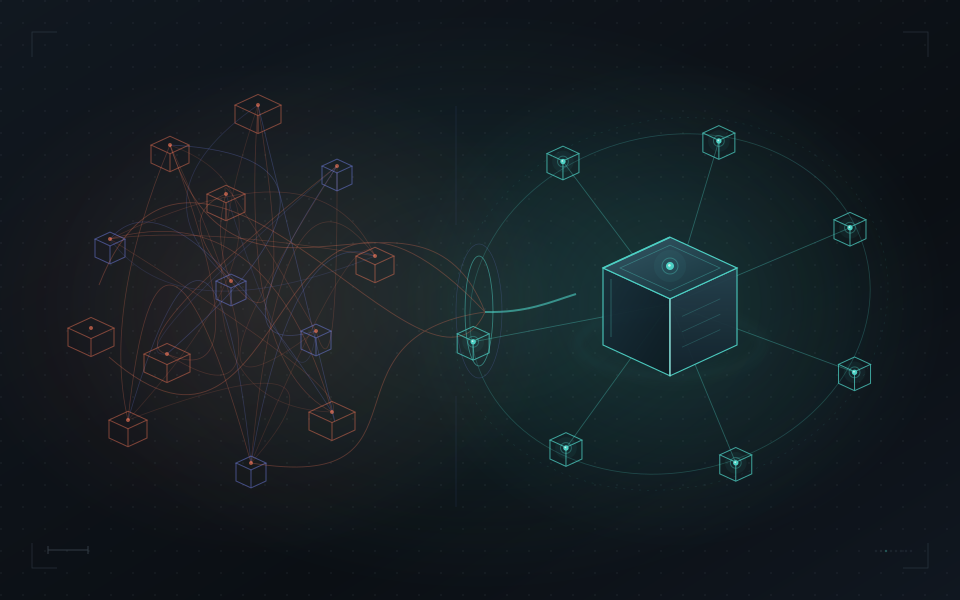

Why identity beats an interpreter
Why not just build a translator between systems? Because translators grow with the square of the systems, and lose continuity. A shared name does not.
InteroperabilityArchitecture
4 min read 
Give every real and virtual thing one persistent name and the immediate benefit is interoperability: systems stop disagreeing about which thing they mean. But interoperability is the floor, not the ceiling. The interesting question is what becomes possible once the world is addressable that simply was not before.
Naming is a small act with a large consequence. It turns a deliverable into a durable asset, a capture into a subject with a history, a fleet of things into a fabric you can query and act on. Here is what that unlocks, roughly in order of how far it reaches.
Today most spatial data is a stack of disconnected deliveries: this year's scan, last year's model, a vendor's tileset, a sensor feed, none of them tied to each other. Name the things they describe and every capture becomes another observation of the same subject. Change detection stops being a manual re-registration project and becomes a property of the name. An archive stops being storage and becomes a living record of how the world changed, per thing, over time. The value of your data goes up every time you look again, instead of accumulating as sediment.
A reasoning system needs subjects to reason about, memory to reason across, and a way to act and see the result. A named world gives it all three: it can refer to a specific thing, pull a compact description of it, remember it across encounters, and address an action to it. The loop closes, identify, understand, reason, act, observe, update, and it closes on names. This is the difference between an AI that can describe a scene and an AI that can be trusted to do something in it.
Naming is what turns the physical world from something AI can look at into something AI can operate in.
The moment two machines can name the same thing, they can coordinate on it without a translator between them. A drone hands a target to a robot by name. A swarm passes work between its members. A vehicle and the infrastructure around it agree on the same obstacle. A robot navigates a building because the building's parts are named the way its planner expects. Coordination at scale is an addressing problem before it is a hardware problem, and a shared name is the address.
A repair request becomes "the sprinkler head in the third-floor conference room, by the door", one name a technician's glasses highlight and a robot navigates to. A showing is scheduled against a unit's identity. An inspection posts back to the exact component it examined. When things have names, the physical world gains an API: you can request, route, and record against specific real objects the way software requests, routes, and records against specific rows. A twin stops being something you look at and becomes something you can work.
Because a name spans the boundary between physical and virtual, a real thing can appear in a simulation as itself, and a virtual overlay can pin to a real object and stay pinned. Train a robot in a simulation and the training maps back to the real robot, because they share a name. Re-theme a room and every object still points at the real chair, so two people in different views can still say "that one" and mean the same thing. Sim-to-real and real-to-sim stop being integration projects and become the same mechanism, with the safety rule that authority only ever flows from the physical to the virtual, never back.
A name can carry proof: which sensors saw a thing, how confident they were, who signed for its presence at a pose and a time. That makes possible things that are painful today, chain of custody for autonomous action, provenance for AI training data drawn from the real world, compliance you can verify after the fact rather than reconstruct from logs. And because privacy is built into the naming layer, the same infrastructure that makes the world addressable also makes it possible to be present in a shared world without being tracked in it.
When the name is free and universal, value moves to what sits on top of it. Keeping identities current across many parties becomes a service. Converging one vendor's names with another's becomes a service. The intelligence layer, fusing sensors, generating derivatives, reasoning over the portfolio, becomes a product. A capture is a one-time sale; a named thing with a history is a subscription, an AI target, and a data asset. The standard being free is exactly what makes the businesses above it large, the same way a free web protocol made the companies on top of it enormous.
Step back and the pattern is one thing said many ways: a name is the unit that lets separate systems, separate moments, separate views, and separate agents all be about the same reality. Everything above, compounding data, operable twins, coordinating machines, a unified real-and-virtual world, demonstrable trust, and the businesses on top, follows from that single property. It is the same move the web made for documents, applied to the physical world and to every virtual world that stands in for it.
Interoperability is what a shared name fixes. An addressable world is what it creates.← All writing

Why not just build a translator between systems? Because translators grow with the square of the systems, and lose continuity. A shared name does not.

Reasoning is about things, not observations. A translator hands an AI a coincidence that expires; a name gives it a subject it can refer to, retrieve, remember, and justify.